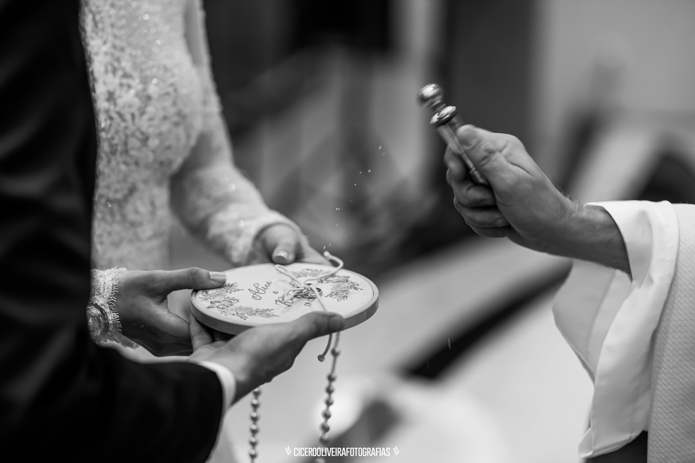

Mayara Brasil Eventos e Cerimonial cuida do planejamento e da condução de casamentos e eventos em Fortaleza, com atenção a cada detalhe.
Trabalho com consultoria, assessoria e cerimonial de eventos, com um carinho especial pelos casamentos. Meu papel é organizar tudo o que dá trabalho para que você chegue ao grande dia tranquila, sabendo que cada detalhe já foi pensado.
Atendo a partir do Henrique Jorge, em Fortaleza, e o primeiro passo é sempre uma conversa para entender o que você imagina.
Do conselho pontual ao acompanhamento completo. Na conversa, a gente descobre qual combina com você.
Para quem quer organizar o evento por conta própria, mas com orientação: um caminho claro de etapas, prioridades e escolhas de fornecedores.
Acompanhamento ao longo dos preparativos: orçamento, contratos, cronograma e conversa com cada fornecedor até a véspera.
No dia, a condução da cerimônia e da festa: horários, cortejo, recepção dos fornecedores e os imprevistos resolvidos sem você perceber.
Você cuida de se emocionar. O resto fica com a gente.
Um caminho simples, para você saber sempre o que vem depois.
Você conta o que imagina: data, estilo, número de convidados e orçamento.
Você recebe a proposta do serviço que faz sentido para o seu evento.
Cronograma, fornecedores e detalhes organizados, etapa por etapa.
O cerimonial conduz tudo para você só viver o momento.
Responda cinco perguntas, veja um cronograma sugerido e envie tudo organizado para a Mayara pelo WhatsApp.
Me chama no WhatsApp ou no Instagram e conta um pouco sobre o seu evento.